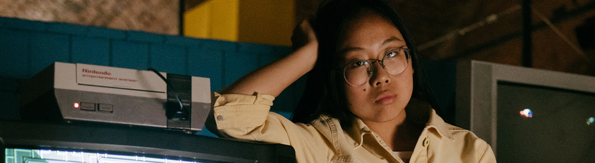
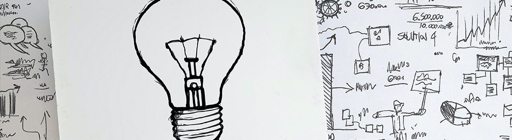
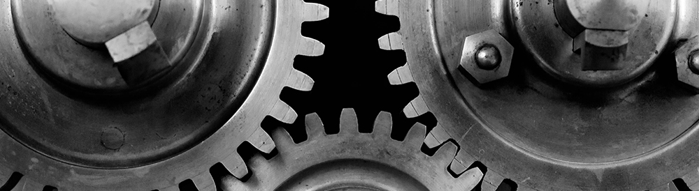

Meme Team
Project Plan
The voice mimicking party game Mimi-Box.
×

×
Overview
Topic
Topic
Meme-teams purpose in this project is to create a physical and portable social game named after the function of mimicking one another, as the “Mimi-box”. This is a spoken game that entices players to speak to it in fun and uniquely interesting ways, because the other players will have to mimic them! Mimi-box is both the game and the controller which is located within a truncated hexagonal prism case built perfectly for heavy use in family settings and even parties.
The Mimi-box will be designed and achieved by Meme-team members who aim to bring this game to life for people to purchase off of retail shelves across the nation, ultimately to become as recognisable as monopoly.
Aiming for encouraging inclusivity in new social settings and delivering fun gameplay that allows Mimi-box’s players to open up, break the ice, and be involved with their peers, and even interact with Mimi-box itself as it guides and talks with the players. Filling the gap in the market on speech focused social games because Meme-team believes that everyone has a unique voice and something to say.
Motivation
Meme-team’s motivation behind the Mimi-box stems from the type of product that it is, a “Social game”. During the COVID-19 lockdowns each member of Meme-team was impacted in different and various ways, but similarly, team members were unable to travel out of state to visit family and friends, even some unable to travel past 5km. An overall lack of social life sparked the motivation behind this project, social games should be encouraging and inclusive with small chances to leave someone out of the fun, you can see this idea in the gameplay design, interactions and physical device of the Mimi-box. Meme-team wanted to create a product that would be used multiple times, making friends, family, and even strangers laugh. Furthermore, working on this project allows Meme-team members to appeal to future employers with their ability to put together an IT product showcasing multiple skill’s clearly by the very design itself. Borrowing from 3D printing, user design, 3D modelling, hardware design, programming, gameplay engineering, audio engineering and additionally business.
Landscape
There have been many games like the Mimi-box that incorporate voice recognition, using different algorithms to distinguish between pitch, tone, and key vocal notes. These include games like the ever-popular SingStar and the original Furby, which was insanely ahead of its time as the first successfully produced domestically aimed robot. Other party types of games that draw from similar playstyle concepts include Operation and Lightning Reaction. SingStar is probably the most comparable mass-produced product, a karaoke video game published by Sony Computer Entertainment Europe and released on the PlayStation console platforms [1]. Unlike the Mimi-Box, the SingStar is generally played verse the computer where a player is required to sing along with the music to score points [2]. In contrast, the Mimi-Box is more of a head-to-head concept and can utilize any form of entertainment input, such as singing, reciting poems, sentences, or even just abstract sounds and noises.
The early generations of Furby's had state of the art voice recognition for its time. A newly purchased Furby begins speaking in the "Furbish" language before gradually replacing Furbish phrases with English over time[3]. Furby's source code was written in ASM language, which was based around a Sunplus SPC81A microcontroller and a Texas Instruments chipset implementing Linear Predictive Coding, which allowed for voice synthesis[4]. This type of coding picks up on certain aspects of the voice, such as the Glottis, which is the space between the vocal folds, which produces buzz, which is characterized by its loudness and frequency, or pitch. This directly correlates to what we need to produce for speech synthesis for the Mimi-Box[5].
While family games such as Lightning Reaction Reloaded and Operation don't implement any speech recognition or synthesis elements, the turn-based gameplay based around multiple players draws similar concepts to the Mimi-Box. The Mimi-Box looks to replicate the thrilling, fast-paced action that these platforms have.
References
-
[1] Encyclopedia Britannica. 2020.
Singstar | Electronic Game. [online]
Available at: <https://www.britannica.com/topic/SingStar>
[Accessed 26 November 2020]. -
[2] Stuff. 2020.
Singstar Is About Winning, Not Singing. [online]
Available at: <https://www.stuff.co.nz/the-press/technology/the-box/gaming/126070/SingStar-is-about-winning-not-singing>
[Accessed 26 November 2020]. -
[3] Listen & Learn. 2020.
No, You Can’T Teach Your Furby To Swear: How Furbies “Learn” Language - Listen & Learn. [online]
Available at: <https://www.listenandlearn.org/blog/no-you-cant-teach-your-furby-to-swear-how-furbies-learn-language/>
[Accessed 26 November 2020]. -
[4] Hughes, M., 2020.
Take A Look Inside The Furby's Leaked Source Code. [online] The Next Web.
Available at: <https://thenextweb.com/dd/2018/08/13/take-a-look-inside-the-furbys-source-code/#:~:text=The%20Furby's%20source%20code%20is,and%20the%20Nintendo%20Entertainment%20System.>
[Accessed 26 November 2020]. -
[5] Support.ircam.fr. 2020.
Introduction - Linear Predictive Coding. [online]
Available at: <http://support.ircam.fr/docs/AudioSculpt/3.0/co/LPC.html>
[Accessed 26 November 2020].
Detailed Description
Aims
Aims
The Mimi-box Project’s aim is to create a handheld voice operated party game product which will be adopted by retailers to sell on their shelves. The meme team plan on achieving this by creating a prototype device and final product specifications document to appeal to investors for budgeting and manufacturing. The process involves these set goals: creating the base mock-up program code, creating a 3D model of the Mimi-box, and prototype hardware sourcing. Thereafter creating the script and voice recordings of Mimi-box interactions, 3D printing and refining the 3D model exterior and interior ready to be presented, testing the prototype with users from ages 12 to young adult[1]. Using the test results and market research, along with materials, final product hardware, and projected manufacturing costs to create the specification document to obtain funding for the fruition of the shelf ready product, sourcing efficient cost-effective manufacturing through the investors partnership.
Mock-up programming code for demonstration and testing
The prototype will be made for testing, to the end user it will essentially be the same as the final product. The programming involved in creating the prototype isn’t overly complex, Steven Holman of the Meme team using his experience in Java programming will write the mock-up program while holding plans to create the final product with python. When aiming for a prototype, functionality can be reduced to save time, focusing on hardware connectivity, voice input and output, voice comparison, difficulty levels, usability and gameplay flow.
3D model object representation of the Mimi-box
The Mimi-box is shaped similar to a skewed and stretched hexagonal prism, it’s designed to contain five buttons, a microphone and speaker gausses, and a battery pack slot. We are able to create a 3D model prototype of the Mimi-box to match hardware dimensions and design changes, this 3D model is easy to update as the Mimi-box is a simple design. These 3D model changes are likely to occur as we fit the hardware, wiring, waterproofing and shock absorption parts into the interior of the prototype, using 3D modelling technology to save costs on assembling physical components per each updated prototype.
Hardware sourcing for prototype
The speaker and microphone of the Mimi-box will be selected for their quality, lifespan, and bulk purchase availability. As the Mimi-box is essentially a spoken game, sound input and output are very important and need to be a focus of the project hardware, furthermore, speakers and microphones used for the prototype will continue through to the final product. The prototype will take advantage of a Raspberry Pi 3B while the final product will require a custom PCB (printed circuit board)[2] to vastly reduce costs, while finding an easy manufactured connection method between the hardware. Lastly the power source for the final product should be easily managed by the user and keep a decent battery charge lifespan[3], while simple button inputs on cords are used for Mimi-box user functionality.
Script & Voice Recording for interactions between the Mimi-box and the players
The main interaction between the users and the game are taken via one button and vocal interaction, Meme team are aiming to create an affinity through these interactions and an entertaining inclusive script. The script is to be built to guide users in gameplay, supply examples or lead users in their thinking, control the flow of the game and game modes, and hype up users creating a fun and straightforward user experience through the Mimi-box’s vocal interactions.
3D printed Mimi-box
3D printing the Mimi-box prototype using the 3D object designed for the hardware specifications and adding rubber for shock absorption and feet to stand the product. Buttons to be printed separately and slotted into place inside the box, in front of the corded button input hardware.
Testing the prototype and collecting data for investors
The completed prototype of the Mimi-box will be tested with various demographics of users ranging from families to groups of 12 years-old’s up to young adults[1]. The data collected from this testing is to be placed into a spreadsheet and represented alongside market research, giving the Meme Team the opportunity to receive an investment or funding that will allow Mimi-box to progress towards manufacturing.
References
-
[1] Medium. 2020.
7 Ways To Test Your Product Idea & Gather Real-World Feedback (At Little-To-No Cost). [online]
Available at: <https://medium.com/swlh/7-ways-to-test-your-product-idea-gather-real-world-feedback-at-little-to-no-cost-72717dc252c8>
[Accessed 24 November 2020]. -
[2] Freelance Robotics. 2020.
Custom PCB Development. [online]
Available at: <http://www.freelancerobotics.com.au/products/custom-pcb-development/>
[Accessed 24 November 2020]. -
[3] Panasonic Batteries. 2020.
How Improved Batteries Help Kids Enjoy Their Battery Toys More. [online]
Available at: <https://www.panasonic-batteries.com/en/news/how-improved-batteries-help-kids-enjoy-their-battery-toys-more>
[Accessed 24 November 2020].
Plans and Progress
As a team, we have created significant artifacts towards a finished product of the Mimi-Box. From Assignment 1, we had different sketches and samples of team member Leonard’s representation of the Mimi-Box idea. The illustrations were highly detailed and drawn in grey lead pencils on paper, with around 2 or 3 hours devoted to completing these. The depiction of his sketches began the basis of an objective to create in Assignment 3.
Research then began in Assignment 2, where we had focused on the hardware required for the Mimi-Box. With this groundwork complete, we then had a strong understanding of the physical components and hardware necessary for building a prototype of the Mimi-Box. A Raspberry Pi 3b was the standout choice for the prototype’s computer, as it has much support and is simple to use when building a model. Assuming we create a final product, we would then use a custom-built printed circuit board (PCB) to power the Mimi-box. But for now, a Raspberry Pi 3b was used, as it is highly compatible with both Java and Python coding, the primary languages used throughout the creation of this product. The simplicity of Java coding was chosen to begin with, which we then used for the .wav files to represent the model. Although Java coding was used in this instance, if this creation ever does come to fruition, we will then shift to Python coding. Python has more fluidity, consistency, and stability and works far better with a Raspberry Pi. There are also more libraries available for Python, which makes programming far more practical in this sense.
Speaker
USBC Charging port
Power Button
Controls
Over the course of Assignment 3, we steadily created a 3d model of the Mimi-Box on Blender, which is a free and open-source 3D creation program. We took samples from the sketches and diagrams of the Mimi-box created in Assignment 1 and added them in Blender with certain features, colours, and styles until the whole team decided on the model to develop. Things such as colours and shades of the Mimi-Box were frequently changed from silver, black, and white to finishing with a gold-ish tone of yellow, which we thought stood out in a party setting. Unlike neutral colours, the goldish style gives off a fun vibe. We also changed the background colour of our 3D creation to a neutral grey.
The contrast of the goldish colour on the grey background makes the Mimi-Box stand out pleasantly. Using Blender has been extremely useful, as we can visualise the Mimi-Box design and adjust the design to our liking. Such as adding LED lights, buttons, a speaker, and a USB-C port.
As a part of Assignment 5, we created a written script to advertise our end-product. To do this, a storyboard of scenes was created. The storyboard and script were used by the director, and the actors when filming the advertisement. The storyboard consists of five different scenes with five different representations of what should happen throughout these scenes. The initial five sketches are the introduction to our advertisement. Scenes 6 - 10 on the storyboard, opens with the basis of the Mimi-Box, which includes the types of gameplay and different modes. Sections 11 - 15 of the storyboard comprises product information regarding the Mimi-Box, such as suggested ages, types of batteries required, and the type of programming which powers the Mimi-Box. 16 – 20 on the storyboard illustrates the different occasions and scenarios which the Mimi-Box is perfectly suited to, such as breaking the ice at a party or being used during family gatherings on various holidays. Finally, it finishes with the scenes from 21 - 25, which summarise the simplicity, durability, ease of access, and fun that the Mimi-Box consists of. With the storyboard created, team member Lochlann utilised his three housemates, including himself, to film these scenes.
All these physical artifacts created throughout Assignment 3, lay the foundations of a design principle with practical components installed that can then be manufactured if, or when, desired by our team.
Story of the project
The Mimi-Box project started with an idea brought upon during the peak of the COVID-19 Australian lockdowns. In this time of heavily restricted social interactions and low human interaction, Australians sang out in one accord from their animal instinct requirements. They needed some form of a social life back. This was the original process of thought that lead to the project concept of a social party game; humans need to socialise, supply and demand.
This basic conceptual idea of a social game came from Leonard of the Meme-team. Leonard took the concept of a social game and mixed it with his experiences and observations from interactions with the strangers he met on his travels abroad. He noted; This needed to be a social game that anyone can play, mixing strangers and friends ranging from all blends of country and cultures, a social game that encourages inclusivity, a social game that only uses what people already possess; their voice.
Leonard decided it would be a social game that uses the human voice, recording, comparing, and outputting sound. After researching standard DIY hardware to create a graphic representation of the device and designing the base gameplay concept, the creation of Mimi-Box started. Regardless of Leonard’s circumstances that brought the Mimi-Box idea to its initial design, Meme-Team had voted to continue working on this project where each team member adopted the Mimi-Box to push this idea to its fullest potential within their capabilities.
Originally thought to be a simple concept with a basic premise, the Mimi-Box’s development process has not been immune to standard development pit holes, but it has also seen some great work. One of the key points to any project is the aim, the goal, the expected result at the end of the deadline, Leonard had written Meme-Teams’ goals and aims into a document based on the team discussions. Furthermore, creating a timeline of the goal milestones, to be filled out and refined as new information and developments come into the project, Meme-Team decided that these aims, goals, and plans would be defined early in the project but open to change as the Mimi-Box takes shape.
During the early stages of development, it was essential to build the core game concept. We needed to know for sure the time and effort required for creating the foundation of the game program. This is the audio input, audio conversion, and the resulting .WAV file to be stored for later playback and comparison. With this alone, the Mimi-Box would have its testable bare-bones proof of concept ready to be refined within the planned timeframe into a complete product. On 5th November 2020, the lead programmer Steven of Meme-Team used a GitHub branch of the team's repository to upload and host the compiled java prototype, on the 6th, Steven added to the prototype an observer for Audio output, then on the 7th, Steven added file writing. From Steven's hard work, the foundation was created speedily, demonstrating early on to the other members of Meme-Team an audio input test, converting sound into an array of bytes represented as comma-separated values.
The decision was made to put less work into refining the foundation and lend that time to other sections of the development, allocating the goal further along in the timeframe's timeline to add the use of an FLL library for completing the audio comparison mechanic. Steven's skill set is unique among the team members. The decision was made to spread his department workload into the hypothetical parts of the timeframe this way, which offered Steven more diverse roles.
The next step in the development process was underway, Michael and Thomas started researching more in-depth into the specific hardware needed. Thomas had previously explored and discussed the comparison of audio files and the hardware with Steven. They had decided to move away from spectrograms towards the much faster version of audio comparison, which, as previously stated, uses an FLL library and byte arrays. Michael became familiar with the Raspberry Pi series of chipboard computers and the necessary hardware. He then brought these findings to a group meeting and shared the information on the team's page. Tom using the info gathered, focused on the risks that could be involved in the hardware and device, creating a report. The Mimi-Box's original design was taking advantage of the Raspberry Pi Zero for its low price and market availability, through discussion and the research, Meme-Team made the change from the Raspberry Pi Zero to the Raspberry Pi 3B. This was a significant increase in price for the prototype yet was easily afforded to a hypothetical out of pocket budget as half the team members own similar devices. With this change in hardware, the prototype no longer represented the hardware that would be used for the shelf-ready product, meaning only one Raspberry Pi 3B is required for purchase when presenting the prototype to future investors.
This change was necessary. The Raspberry Pi 3B provides the Mimi-Box prototype with the support it requires to represent the final product. Creating a priority in the Meme-Teams goals when later appealing for investor funding, as now the full product will vastly benefit from a custom-built PCB with a broader range of tested hardware from the prototype. Michael was able to find suitable power source options, microphones, and speakers that were not supported on the Raspberry Pi Zero. But it can be built into the design of a custom PCB—creating a considerable cut in projected manufacturing cost, and a boost in ever-important available audio options for input/output quality.
The biggest struggle that came with solidifying our choices in hardware and making hardware changes was regarding compatibility. The questions were not only "which battery source is plausible for battery life? price? size? and availability for customer purchase", but the questions that were now more important were also "what volts/amps will the Raspberry Pi 3B require? how can we increase battery life without affecting the hardware specifications? will this cause overheating?".
Just as the physical Mimi-Box device's hardware and software are essential, the Meme-Team's project cannot succeed without clear direction and strategy to enter the market. Brent led the team discussion related to competition in the marketplace, researching other popular social games using the same gameplay aspects and technical ability, he was able to define the positions these games take in each household. His findings helped refine the aim of the Mimi-Box to a demographic target while filling a gap in the market. This information was considered as Leonard altered the goals and aim, updating them and the previously mentioned final product hardware specifications. Hereafter, Brent created an advertisement script designed for presenting the Mimi-Box to potential investors. Thomas refined this script to create a graphic storyboard adding the visual elements that were later implemented in filming.
With the storyboard and script in tow, Lochlann gathered local actors and directed the advertisement's filming, communicating with the team on this process. Lochlann was able to improvise some scenes to remove/replace the need for material and props that weren't available at the due time. While filming the advertisement, Lochlann was also without a working prototype. To amend the problem that occurred in the first takes of the film, where the actors did now know when to respond, Lochlann used part of the example gameplay script provided by Leonard, to speak as the role of Mimi-Box's audio interaction, allowing the correct timing of the actor's responses. A feature of the storyboard was the Mimi-Box sitting between the actors, lacking a physical prototype, Steve had created a 3D object. He rendered a video output of this object to be keyed into its planned place in the storyboard.
A finer feature of the Mimi-Box object planned within this timeframe was the battery compartment opening mechanism. As it was unneeded for the video, Steve had changed the battery compartment's priority to the button pattern and location. Leo worked the example gameplay script into sections to be recorded. With an attempt at recording, he found his studio microphone to produce low-quality audio and was required to improvise using a smartphone with a pop filter made out of a sock. The audio was recorded, edited, processed, and chopped up. The advertisement video files were shared with Michael through Microsoft Teams and GitHub, who spent his time editing the footage, voice overlay, backing track, 3D object, and text into the advertisement video. When needed, Michael would request additional or a reshoot of footage from Lochlann and an additional voice-over created by Leo as the Mimi-box's prototype voice.
Currently, Meme-Team stands: As a team, we have created multiple artifacts, functionality, documentation, experimentation results, advertisements for investors, a 3D model not far off printing, and prototyping code. In terms of project development and how the timeline will hypothetically continue, the next significant steps will be to implement an IFF library, hosting the java program on a raspberry pi with connected hardware, creating the interior of the 3D model, and 3D printing the model.
Roles
The work structure surrounding the Mimi-Box is a fundamental concept. We have a designated Lead Developer, Steven, the most talented programmer in our team. The remaining team members pitch in with any necessary coding with the website to help Steven's pressure and workload. Other than Steven, we have no different real designated roles for our team members. This works well for us, as all other team members have good all-around skills and knowledge on various other aspects of I.T, so we have the advantage of being able to assign any task to any team member.
In Week 1, Thomas created all the required Assignment 3 tasks in Microsoft teams. We then delegated each team member tasks to spread the assignment's entire workload evenly amongst the group. Leonard, Michael, and Lochlann all started researching and writing various parts of the progress. At the same time, Brent focused on writing a script for Assignment 5, the first task.
Week 2 was much similar, with Steven studying Python libraries, which was required for the Mimi-Box. Brent finalised the script for Assignment 5 while also researching for an advertisement and demographic of our product. Thomas used Brent's written script for Assignment 5 and began sketches on a storyboard to be submitted along with the script. Michael started to investigate Tools and Technologies related to the Mimi-Box. At the same time, Leonard created the Timeframe document and developed the record for the assigned roles. Lochlann completed his career plan and revised and edited everyone else's submitted to this point.
Week 3 was another research and write week for the team, with Brent completing the Landscape part of the project and finishing his career plan. Lochlann compared everyone's career plans and summarised this in a document that Steven transferred to our website. Thomas completed and integrated the storyboard with the script, ready for filming, for Assignment 5. An urgent team meeting was called to share the workload. Leonard took the initiative to delegate some tasks to himself, which included the Aim of the project.
Due to getting married and going on a short honeymoon, Brent was happily granted leave by the rest of his team members and missed the majority of Week 4. Lochlann used Week 4 to review the draft script that Brent wrote in Week 1 and the Storyboard that Thomas drew in preparation for recording the advertisement for Assignment 5 in Week 5. Thomas focused on completing the Scope and Testing tasks required for submission as a part of Assignment 3. Leonard being an exceptionally skilled writer, began a written script for the Mimi-Box gameplay. Steven focused on developing a prototype of the Mimi-Box in Blender, a program for creating and designing 3D models.
With Week 5 beginning, the Plans and Progress part of the assignment still needed to be written, the three most substantial writers, Lochlann, Leonard, and Brent, all took part in writing this section together as it was a massive workload for just an individual. Steven continued working on the website associated with the Mimi-Box and making changes to team profiles from Assignment 2 to update them with our career plans in Assignment 3. With his roommates and his camera and recording equipment, Lochlann filmed the scenes that were required to submit for Assignment 5. Leonard recorded his vocals for the Mimi-Box video advertisement. Having a strong background in video editing, Michael turned both the scenes Lochlann filmed and vocals Leonard recorded into a short advertising piece that to be submitted. Thomas used this time to continue editing other written reports while also helping Steve with the website's coding.
Week 6 was mostly tidying up and finishing off any written pieces needing to be submitted. Brent took it upon himself to write and summarise this very piece of information regarding our team roles. Lochlann reviewed and edited the Progress and Plans of the Mimi-Box. At the same time, Leonard wrote the Mimi-Box story due to its being his invention and the background of why he created this product. Being a team player, Thomas pitched in and gave everyone any pieces of written information that needed assistance.
From Week 6 onwards, due to RMIT granting an extension on the due date, as a team, we will all use this time to go over all the different categories of Assignment 3 and editing and reference checking anything that requires it. Steven will transfer all this information over to the website, ready for submission. Overall, while our workgroup doesn't have any clearly defined roles assigned over the whole project, we all have excellent all-around knowledge and work ethic to achieve the tasks that need to be completed.
Scope and Limits
The project's scope is relative to the considered finalization stage based on time restraints given as well individual commitments that may impede the progress of the outcome. Given the current assignment deadline, as it stands, we have a prototype of our entertainment system that presents the functionality of recording raw audio inputs and said input recorded logged as an actively saved sound file. Along with this is a 3rd-dimensional digital visual representation as designs for the product and place holder for a voice over for the game.
As the scope for a whole development cycle is unfeasible, give our current restrictions, it would be appropriate to assume that the game loop the system requires for basic function may not be presentable and delivered in segments as aforementioned.
These would pertain to the basic game functions such as taking the audio and saving it as a file but will not be yet able to compare these audio files accurately or to an acquitted standard of function that a final output would need, as well as deliverable or a real-world demonstration of our final product would be un-producible. Although many examples of code and hardware needed to function have been explored by multiple Meme-Team members withdrawn and computer-drawn designs and working on a Raspberry Pi recording audio input, which can be seen in the protect testing. Extensive research has also been put towards the absent necessity through the subset tasks proposed by the Mimi-Box. However, this achievement may be unobtainable due to the hypothetical global appeal of the device and vigorous testing that is implied by a global scale production line that is also mentioned in the testing section, an example that could be given in the long term that would not happen without backing from a company or entrepreneur.
As the game is soundly based, it wouldn't be illogical to draw a comparison towards Sony Entertainments Sing-Star[1] in which you try to imitate famous singers in iconic songs although, on January 31, 2020, the company shut down, the proportions of the company speak for themselves and in the case of long-term development would see them as a milestone competitor "Sing-Star series has now sold over 20 million units, Sony has announced.... confirmed 16 million units had been sold across PAL regions alone"[2]. This connects back to the global variation required by the testing and a final production line and would be considered way beyond the scope of current circumstances.
References
-
[1] Playstation. 2020.
Singstar Celebration. [online]
Available at: <https://www.playstation.com/en-au/games/singstar-celebration-ps4/>
[Accessed 20 November 2020]. -
[2] GamesIndustry.biz. 2020.
Singstar Reaches 20 Million Sales. [online]
Available at: <https://www.gamesindustry.biz/articles/singstar-reaches-20-million-sales>
[Accessed 20 November 2020].
Tools and Technologies
When producing the Mimi Box, a standalone entertainment system, the two aspects to consider are the hardware in use and the software and two subset factors, which are the developmental prototype and then the final device. The primary board for prototyping will be a Raspberry Pi 3 Model B Plus[1] to pertain a relatively accurate representation of size and power delivery due to its "tiny credit card size... Just add a keyboard, mouse, display, power supply, micro SD card with installed Linux"[1], which, as stated, uses the Linux operating system variant Raspbian specifically built for the Pi. This would be ideal due to its distinct flexibility for software development availability, testing comparison, and to transition the development to the final product in the event of crunch time.
The final product itself would be a custom-built PCB with inbuilt required hardware such as speakers, microphone, and a battery kit that would be mounted individually upon the PCB. The prototype will require external attachment placeholders for the mounted peripherals. Our chosen microphone for the prototype is a 'SunFounder USB 2.0 Mini'[2], primarily due to its convenient size and compatibility with the chosen board during development. This is also the idea that followed when selecting the battery pack 'MintyBoost Kit - v3.0'[3]. Although this speaker was more aesthetically pleasing 'Speaker pHAT'[4] while still maintaining size and power efficiency but aiming for a retro style that fits the protects target appeal of returning to home gaming, interpersonal interactions, and away from online.
The software during the development and the final product differ, likewise to the hardware as in current development on the Raspberry Pi 3 B Plus is using Java[5] (Java Development Kit 14[6] and onto 15 depending on development period) and this will be translated into Python (version 3.9) towards the end of the production to reduce the complexity of the library and functions called to the specific requirements of our construed game modes during later program development. Beyond that, the plan is to have the custom PCB built to the program specs' requirements rather than limiting the function of the game based on hardware constraints when producing a final product.
References
-
[1] Pi Australia. 2020.
Raspberry Pi 3 Model B+. [online]
Available at: <https://raspberry.piaustralia.com.au/collections/raspberry-pi-boards/products/raspberry-pi-3-model-b-plus>
[Accessed 20 November 2020]. -
[2] Amazon.com. 2020.
SunFounder USB 2.0 Mini Microphone [online]
Available at: <https://www.amazon.com/dp/B01KLRBHGM/>
[Accessed 20 November 2020]. -
[3] Industries, A., 2020.
Mintyboost Kit. [online]
Adafruit.com. Available at: <https://www.adafruit.com/product/14>
[Accessed 20 November 2020]. -
[4] Shop.pimoroni.com. 2020.
Speaker Phat – Pimoroni. [online]
Available at: <https://shop.pimoroni.com/products/speaker-phat>
[Accessed 20 November 2020]. -
[5] Oracle.com. 2020.
Java Software | Oracle. [online]
Available at: <https://www.oracle.com/java/>
[Accessed 20 November 2020]. -
[6] Oracle.com. 2020.
JDK 14 Release Notes, Important Changes, And Information. [online]
Available at: <https://www.oracle.com/java/technologies/javase/14-relnote-issues.html>
[Accessed 20 November 2020].
Testing
It would not be easy to declare when the Mimi box is a finished product from multiple aspects as many innovations could be made in a series of updates or version releases. And that would propose various expansions upon the available game modes & or similar variations of the way the player must mimic their opponent, such as facial expressions.
In the case for the basis of a prototype the first version of the Mimi box that would be considered a final product, this would most likely entail the base primes of having players be capable of comparing their voice recording to set a score-based system this would be the most accurate demonstration of the product the Meme Team intends.
Yet, having a real-world design and functional program would be the most feasible due to time confinements. Earlier (In plans and progress) there were examples such as the 3D Model, code examples toward what a functional version of our device would require, and example audio output from the product.
Furthermore, multiple aspects would benefit from quality assurance. The most prevalent to mind is the accuracy of the compared matrix of the recorded MEL frequencies, which would directly determine the scale and skill ceiling, this is only trial and error as the game must be within a degree of accuracy that isn't so low the game requires no skill and on the opposite end not too accurate as to be unplayable. This would also include quality assuring the physical durability of the hardware encasement to upfront deliver to our target audience, which would require a broad demographic with diverse dialect to ensure those language variants of the product are quality assured.
This would include most if not all available nationalities to test as well as any age groups as vocal intonation varies due to puberty as well "Linguistic variation, Sociolinguistic Variation, Dialectal Variation, and Linguistic Variables"[1] which comes back to the IPA[2] (International phonetic alphabet) and regional to language variation which would be an example of how our Mimi box fulfils its role as a versatile in-home entertainment device.
References
-
[1] ThoughtCo. 2020.
What Is Linguistic Variation?. [online]
Available at: <https://www.thoughtco.com/what-is-linguistic-variation-1691242#:~:text=Dialectal%20Variation,difference%20is%20one%20of%20accent.>
[Accessed 11 November 2020]. -
[2] Internationalphoneticassociation.org. 2020.
Full IPA Chart | International Phonetic Association. [online]
Available at: <https://www.internationalphoneticassociation.org/content/full-ipa-chart>
[Accessed 11 November 2020].
Timeframe
Timeframe
Michael Heaney |
Steven Holman |
Lochlann Keenan Kelli |
Brent Kimm |
Thomas Lewis |
Leonard McDonald |
|
Week 1 (Research & Organising) |
Research: (Documentation) Tools and technologies general |
Research: (Programming) Python & python libraries compared to java & java libraries. Organisation: Setting up GitHub repository. Setting up Microsoft Teams. |
Draft: (Documentation) Project progress document template drafted |
Draft: (Video/Artefact) Worked on script for advertisement Research: Data backup and security, sharing information in teams meeting to team members. |
Organisation: (Documentation) Creating assignable Tasks in Microsoft Teams representing all expected project work. |
Research: (Documentation) Project milestones, documentation, and reports for ongoing project development. |
Week 2 (Initial Drafting) |
Research/Draft: (Documentation) Tools and technologies: Deciding between which Raspberry Pi model to use, power supply & discussing user experience addressing power supply. |
Draft: (Programming) Writing Java program code for the Mimi-box prototype: microphone input, conversion audio to byte array, saving as file. Organisation: (Artefact) Uploaded java program code to GitHub repository |
Organisation/Editing: (Documentation) Defined team career pathway plans Communicated with Leo on job roles. |
Research: (Video) Product pitches, advertisement marketing, our approach to selling the product Editing: (Video) Finalised script |
Draft: (Artefact) Storyboard pencil drawing of Mimi-box advertisement video from Brents draft script |
Organisation: (Documentation) Created the Timeframe document (to be updated weekly) Created the weekly job roles document (to be updated weekly) |
Week 3 (Final Research) |
Research/Draft: (Documentation) Tools and technologies: Mimi-box case material Editing: (Documentation) Tools and technologies |
Organisation: (Website) Transferring data and information to the website Research/Draft: (Artefact) Blender created 3D model of the Mimi-box |
Finalising: (Documentation) Career pathway plans Organisation: (Website) Career pathway plans implemented into the website Research: (Documentation) Project progress document |
Research: (Documentation) Landscape and marketability of physical social games. Market Mimi-box targets. Finalising: (Documentation) Landscape of the Mimi-box |
Editing/finalising: (Video) Completing advertisement storyboard, edited and divided script for video recording Draft/Finalising: (Documentation) Project testing document created |
Draft/Finalising: (Documentation) Aim of the Mimi-box project & the projects goals Research/Draft: (Documentation) Topic document, Story of Mimi-box for project progress. |
Week 4 (Major Artefact Drafting) |
Research: (Video) Advertisement editing styles, royalty free music. Organising: (Video) Setting up Premier Pro & Video encoding settings. |
Editing: (Artefact) Large progress on Mimi-box 3D model object (buttons, power supply casing, detail) Editing: (Artefact/Website) 3D model object added to website with added ability to move Mimi-box perspective. |
Organising/Finalising: (Video) Acquiring props for advertisement scenes, changing and finalising video script to suit location/props. |
On leave (Marriage) (Honeymoon) |
Draft/Finalising: (Documentation) Completed scope and testing, Completed risks documentation Research: (Documentation) researching other documentation required for subsequent week’s work. |
Draft/Finalising: (Documentation/Artefact) Created gameplay script for vocal & interaction part of Mimi-box game Organising: (Video/Artefact) Set up studio microphone for recording gameplay script. |
Week 5 (Video Completion Website work) |
Editing: (Video) Advertisement video creation, communicated with Lochlann & Leo for new footage and voiceover, continued editing. Mimi-box 3D object render received from Steve keyed and overlayed into footage. |
Finalising: (Artefact) 3D model changes added via new user design (Video) rendered 3D model video output for advertisement. Editing: (Website) Updating profiles, website design, web 3D-model render updated & interactivity added Editing: (Documentation) Guiding team members in questions. |
Draft/Finalising: (Video) Recorded footage for the advertisement, created additional footage and acting performances as requested by Michael. |
Editing: (Documentation) Made addition to plans and progress documentation. Editing and adding onto draft documents in Microsoft Teams. |
Finalising: (Documentation) Tools and technology Draft/Finalising: (Documentation) Project scopes and limits document created and completed. Added group reflection draft Editing: (Website) Refining HTML and CSS webpage code. |
Editing/Finalising: (Video) Recorded voice over vocals for the video advertisement, created additional voice over upon request from Michael. Draft/Finalising: (Video/Artefact) noise reduction, chopping up. Finalising: (Documentation) |
Week 6 (Documentation finalisation) |
Editing/Finalising: (Video) Early week finalisation of advertisement video after making team observation revisions. Uploading of advertisement in HD as unlisted YouTube video. Editing: (website) Found images and pictures for use in the website to represent different sections and break up the text and whitespace of each page. Adding in-line references on documentation. |
Edit/Finalisation: (Website/Documentation) Transfer all information posted in Microsoft Teams into the website, format data added to website into HTML. Editing small sections of the team submitted documents while moving them into an official PDF and the Website. Hyperlink in-line references. Finalised: (Documentation) Review documentation and request additional tasks for team members. Programming: (Documentation/Artefact) Wrote up coding section to represent the Mimi-box code in a document Adding in-line references on documentation. |
Editing/Finalised: (Documentation) Heavy editing to various documents, edited the plans and process of Mimi-box, adding information that was missing, formatted into a formal document, edited the team roles document after Brent had written it up. Adding in-line references on documentation. |
Editing/Finalised: (Documentation) Reviewed team roles dot-points & re-wrote into eligible document representation of the data. Wrote part of plans and progress. Created refined completed team roles document Wrote up team reflection, edited individual team reflections and other documents. Adding in-line references on documentation. |
Editing: (website) Found images and pictures to use for the various sections of the website to represent the pages and data as icons. Editing/Finalised: (Documentation) Wrote up the Tools document and represented the GitHub and Microsoft Teams information with screenshots. Adding in-line references on documentation. |
Finalising: (Documentation) Completed and edited the story of the Mimi-box development process in plans and process document. Editing/Finalising: (Documentation) Editing current timeframe document table & adding weeks 7 through 15. Editing Topic, job roles. Adding in-line references on documentation. |
Week 7 (Market Research) (Prototype assembly) |
Assembly: (Artefact) Acquire/purchase Mimi-box prototype hardware: Raspberry pi 3b + battery from Lochlann, purchasing USB microphone, speaker, button receivers, pHAT CB, batteries. Assemble Mimi-box hardware ready for software installation and encasing. |
Editing/Finalising: (Programming) Implement IFF libraries for audio file comparison in Java prototype Assembly: (Programming) Update Mimi-box Java program and create repository link |
Assembly: (Artefact) Pass own Raspberry pi 3b onto Michael Research/Finalising: (Market) Study demographic of teenagers, creating customer segment dataset for advertising Mimi-box to teenagers, finding a problem Mimi-box solves for teenagers. |
Assembly: (Artefact) Using the Mimi-box model, 3D-print the model to be the prototype case. Pass Mimi-box case onto Michael Research/Finalising: (Market) Study demographic of Young adult party groups, creating customer segment dataset for advertising Mimi-box to YA during parties, finding a problem Mimi-box solves for party situations. |
Research/Finalising: (Market) Study demographic of families, creating customer segment dataset for advertising Mimi-box to family situations, finding a problem Mimi-box solves for families. |
Organisation: (Market) Set-up meetings with investors and boardgame/social-game developer businesses for week 12. Organisation: (Market/Documentation) Organise prototype gameplay testing schedule with friends, family, institute, local boardgame café, house party. Asking additional questions: how much would you pay for this? When would you use this? |
Week 8 (Prototype Testing) (Market report) |
Assembly: (Artefact) Install raspberry pi OS and Java runtime environment, pull and install Mimi-box prototype program from Steve’s link Encase Hardware into Mimi-box case from Brent Documentation/Testing: (Artefact) Test Mimi-box prototype running code, test battery life. (brief stress test) Meet and deliver Mimi-box to Leo for market testing. |
Research: (Programming) Research Python programming for the finalised product. Editing: (Programming) |
Editing: (Artefact/Documentation) Work on Mimi-box gameplay script creating large variety of possible vocal interactions between Mimi-box and players, documenting data in a spreadsheet database. Creating three different possible Mimi-box interaction sound libraries scripts. |
Draft: (Market/Documentation) Research similar products purchase results and report on them related to Mimi-box potential in the market, using products as examples that are produced by the investors whom Meme-team will have a meeting. |
Draft: (Market) Based off research of customer segment datasets, create a spreadsheet document for holding Mimi-box gameplay test data. Pass spreadsheet onto Leo. Create questions sheet and document for people being tested to sign. Research: (Documentation/Artefact) Research hardware required to represent the final product, creating report. |
Organisation: (Market/Documentation) Receive spreadsheet from Tom Meet locally with Michael for testing prototype with different people according to schedule. Record data from testing into spreadsheet separated into three demographics |
Week 9 |
Draft/Editing: (Market/Documentation) Document hardware and battery life test results into a report. Research: (Artefact) Some of the prototype’s hardware is similar to the final product, if needed search for alternatives based off test. |
Editing: (Programming) Editing/Finalising: (Artefact) Finalise 3D design on Mimi-box prototype and better fitting compartments for hardware in preparation for presenting Mimi-box in week 12 |
Editing/Finalise: (Artefact/Documentation) Segment the scripts into Teenager, Family, and Party segmented customer datasets. Assembly: (Artefact) Purchase professional voice acting and rights to use audio from a voice actor/actress (sites like fiverr.com) |
Research: (Artefact) Research and purchase additional casing insulation and waterproofing. Search techniques on installing these additions. Keep this material for the next prototype |
Research: (Market) Research manufacturing standards and the margin of costs in our chosen hardware material. Research transporting and storage of materials. |
Editing: (Market/Documentation) More testing and recording of prototype according to schedule Message team members with a proposed plan for a meet up time prior to week 12 investment meetings. |
Week 10 |
Research: (Documentation) Search articles and industry forums on custom printed circuit boards. Compare these functionalities between Raspberry pi 3b, (focus on stress test results (i.e. battery life and overheating) |
Editing: (Programming) Editing: (Programming) Add professional voice acting and script to prototype, replacing Leo’s test Audio. |
Draft: (Documentation) Write up the script into a report to represent the possible outcomes of gameplay. Each tree of possible roads and outcomes should be represented (i.e. players not interacting with the game, causing it to go into idle mode) |
Assembly: (Artefact) 3D print the Mimi-box updated model as a revised prototype case. Add additional waterproofing and insulation to prototype case. Pass Mimi-box case onto Leo. |
Research: (market) Research manufacturing parts, installation of software, and soldering. Draft: (Documentation) Create a hardware costs document of week 9 and 10’s research results |
Finalising: (Documentation) Present the data from testing the prototype into a report using the tested individual’s documents showing their answers to our questions. Reporting on statistics of how many people said they would buy it, for what price, and other market testing research. |
Week 11 (Compiling reports) (Meeting preparation) |
Official Report: How the prototype functioned in stress tests (Example of expected results for final product stress test). Hardware of the Mimi-box. |
Official Report: Individual reports on Java and Python Mimi-box programming code with explanations on how it works. |
Official Report: Script of voice acting material and example gameplay tree outcomes. Graph showing possible tree outcomes, sections highlighted |
Official Report: Similar products purchased and the Market, expected market for social game industry and the percentage of buyers over the years. |
Official Report: Document breaking down example margin of costs regarding hardware material, manufacturing, assembly. |
Official Report: Mimi-box test results detailing information represented into customer segmented demographics, showing appeal of product. |
Week 12 (investors meetings) |
Dress up in business attire and join together to present Mimi-box to potential investors and businesses from the scheduled meetings. Spend the week going to scheduled Investors meetings, presenting the Mimi-box to these businesses and Investors, with our reports finalised from week 11: hardware estimated cost margin report (appealing to businesses with their own manufacturing means), market testing data report covering three customer segmentations (appealing to businesses who have experience branding to one or multiple of these demographics), voice acting script and the multiple gameplay paths it covers, the programming of the game and how we compare audio and change settings, market research and competition (showing why Mimi-box can succeed) and showing the video advertisement showcasing the early prototype idea. Secure an investor or second meeting. Discuss product price. |
|||||
Week 13 (preparation for manufacturing) |
(Assuming an investment) Pricing: (Market) Contact with multiple creators of custom printed circuit boards Compare prices and availability. |
Editing: (Programming) Adding or changing functionality based on test results and/or industry professional investor opinion |
(Assuming an investment) Organisation/Pricing: (Market/Artefact) Writers and voice actors scouted for various accents. Paid for their work from investment funding (as speaking is the main focus: Mimi-box requires humour and energetic interactions from the product) |
(Assuming an investment) Organisation/Pricing: (Market) Contacting with shopping centres and game shops to discuss contracts and potential to place Mimi-box product in their establishment. |
(Assuming an investment) Pricing: (Market) Communicating with manufacturers to compare assembly line costs. Discussing proposed contracts with Mimi-box’s brand owners. |
(Assuming an investment) Research/Editing: (Documentation/Market) Brand is created with ownership divided among Meme-team members and investor (likely case). The image of a brand is starting research to be brought to the team for discussion. |
Week 14 |
Pricing: (Market) Continue contact and comparisons, create a short list of potential PCB creators and discuss with Steven on the requirements. Testing: (Artefact) Test a similar PCB provided by PCB creator. Discussing brand with co-owners |
Finalising: (Programming) Completing the program code Research/Editing: (Documentation/Market)
|
Organisation: (Artefact) Planning on localisation across popular countries, professional hired translators translate the script and re-write sections to fit the countries pop-culture and address the cultural differences. Discussing brand with co-owners |
Pricing: (Market) Continue contact and talk about contracts, finding the smartest deal with businesses adopting our product, (exclusively sell in one business for a better profit margin, or don’t sell exclusive and reach more customers) Discussing brand with co-owners |
Pricing: (Market) Continue discussing proposed contracts with manufacturers, finding the most beneficial manufacturer and developing a contract to be signed with the brand co-owners. Discussing brand with co-owners |
Research: (Market) Multiple test aesthetics’ of the Mimi-Box brand art, Colour, packaging art, font, mature or child-like? (depending on the test data and demographic(s) chosen). (Finalising: Market) Discussing brand with co-owners Finalising: (Market) Branding chosen, art style and design principles decided on. Artist scouted and hired to create brand art for packaging and advertisement. |
Week 15 |
Finalising: (Market) Report on and have co-owners sign as a business for the contract with PCB manufacturer. |
Finalising: (Programming) Additional material (i.e. voice acting, language selection, and narrative pathways) added to product. |
Pricing: (Artefact) Add major language as localisation, hiring voice actors in these languages to record lines. |
Finalising: (Market) Report on and have co-owners sign as a business contracts to sell the product in stores or online. |
Finalising: (Market) Report on and have co-owners sign as a business a contract with a manufacturer. |
Finalising: (Market) Sending brand artwork to be printed onto packaging for the product |
Week 16 |
Finalising: (Market) Organise the PCB manufacturing, send manufactured PCB with program installed to product manufacturer. |
Finalising: (Programming) Additional material (i.e. language) added to product. Finalising: (Market) Send program to be installed into custom PCB. |
Research: (Artefact) Research additional countries that the brand could branch out the product to. |
Finalising: (Market) Set up sales plans and date of first shipments Set up transportation to businesses warehouses. |
Finalising: (Market) Organise to start manufacturing the product, packaging, and sent to rental warehouse storage. |
Finalising: (Market) Print box art is forwarded to manufacturing assembly line for packaging the product. |
Risks
The Mimi box development as an idea was more complex than originally thought of, considering implementing basic components such as the power source and code format were often reconsidered throughout the process.
A primary concern of the entertainment device is the power consumption and therefore resulting in a lack of gameplay time with our prototype arose in which multiple options are viable but "All products covered by energy efficiency regulations must meet certain requirements before they can be supplied or sold in Australia or New Zealand."[1]. This makes it so we must comply with a standard of modern efficiency before convenience, which could dramatically impact the product output if prototype power consumption relative to product power usage differs significantly.
Furthermore, currently, the software is recording inputs from raw Hz into .WAV files, which can be seen in the project testing section, which is a great step in the correct direction. Beyond this, comparing the files and having a score-based system set around said comparisons to be the end goal as a functioning game mode which may be easier with Python, rather than java, the latter being the one the team has chosen for the prototyping phase, which could cause minor disparagement in how code will function in the final product. It is a delicate risk due to the amount of variation the game itself must entail to be a global product that will need vigorous quality assurance for various dialects, which could be problematic due to production time constraints, again leading toward an unfavourable unit quality on launch simply due to a large amount of variation that "differences between the speech of men and women, different social classes, and differences between age groups. People will identify some of these features as marking the ‘best’ or most ‘beautiful’ form of the language, other features will be considered nonstandard or undesirable,"[2].
A consideration that would have to be taken by region as the product is sound orientated and the inherent functional quality as well as sale output. This would be riskily undertaken the less testing given a particular language or dialect variation and a considerable aspect to assess at a case-by-case basis as to reduce the impact on our Mimi's key trait of broad appeal and its most fragile asset.
In terms of hardware, the casing would be mostly "Acrylonitrile butadiene styrene, more commonly known as ABS plastic. It is relatively inexpensive and lightweight, with a density of 1.08 grams per cubic centimetre"[3] for sustained durability and cost efficiency, which in itself brings a cooling risk based on ambient temperature and runtime. The power implementation manor will vary how we will have the batteries or power cable connected and protected. We would require an airtight seal or case cover on the exterior to make the product more waterproof. That would raise the risk for temperature and device handling limitations and should have terms and conditions to the situation where hardware or software insufficiency is in the fault of design, manufacture, or user actions and assessed through testing. It may require fail-safe measures as seen in the original Xbox 360's red ring of death[4], which displayed the type of fault and severity of damage by the number and placement of red bars in the ring. Something like this for various functional issues would reduce risk to company image and allow us to offer repair or a supplementary service in return for product fault on our behalf, delicate implementation of insurance cover and user warranty to compensate for inevitable faults at any level of production or consumer use.
References
-
[1] Energy Rating. 2020.
Video Game Consoles [online]
Available at: <https://www.energyrating.gov.au/products/video-game-consoles>
[Accessed 16 November 2020]. -
[2] SIL International. 2020.
Language Variation. [online]
Available at: <https://www.sil.org/language-assessment/language-variation>
[Accessed 16 November 2020]. -
[3] Guide, T., 2020.
Gadget Materials Guide: Aluminum Vs Carbon Fiber, Plastic And Glass. [online] Tom's Guide.
Available at: <https://www.tomsguide.com/us/gadget-materials-guide,news-22743.html>
[Accessed 16 November 2020]. -
[4] Business Insider. 2020.
How Microsoft Spent $1 Billion On A Simple Mistake With Its Best Game Console. [online]
Available at: <https://www.businessinsider.com/red-ring-of-death-recall-2016-4>
[Accessed 16 November 2020]. -
[5] En.wikipedia.org. 2020.
Xbox 360 Error Codes.Svg. [online]
Available at: <https://en.wikipedia.org/wiki/File:Xbox_360_Error_codes.svg>
[Accessed 16 November 2020].
Group Processes and Communications
Meme-Team is expected to have a meeting at least twice a week. The two days in the week which are decided are Sunday at 4 pm AEDT and Wednesday at noon AEDT. If a team member cannot attend one or more of these meetings, it is expected of them to notify the group at least one day in advance. In order for no team members to miss what was said in the meetings, they are to be recorded and the minutes written down. Meme-Team primarily communicates through different social media; both Microsoft Teams and Discord are used to communicate. Teams is to be used for more professional conversations and meetings, while Discord is to be used for more casual discussions regarding the project.
If a team member is not able to complete tasks due to personal reasons, the other team members will pick up where they left off, until they can come back to complete their task. However, everybody in Meme-Team produces quality work and picks up tasks to make up for the loss of time.